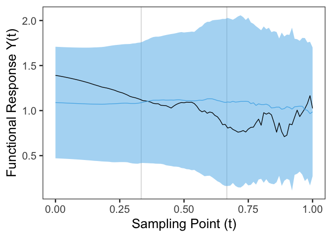
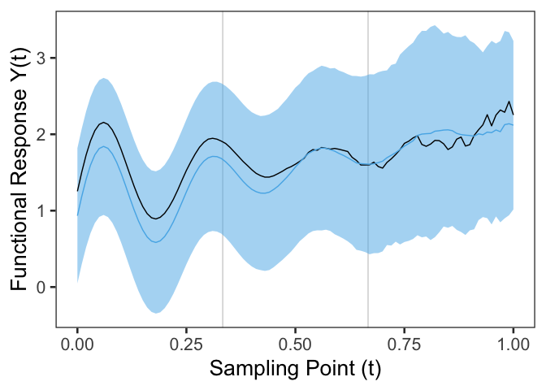

Description
The R package FunctionalPrediction allows one to compute simultaneous confidence bands for function-valued parameters (e.g. for mean functions μ = {μ(t) : t ∈ [0,1]}) and adds the ability to create one-sided bands, prediction bands, and simultaneous bands for the conditional mean of a functional concurrent regression model. Users can install FunctionalPrediction directly, and it will add on the original capabilities of ffscb alongside the concurrent regression model bands.
The band shapes are constructed under the fairness constraint of false positive rate balance which allows to distribute the total false positive rate α ∈ (0,1) over partitions 0 = a0 < a1 < … < ap = 1 of the function domain [0,1].[^1] This leads to band shapes that are interpretable both globally and locally. Globally (i.e. over the total domain [0,1]) the simultaneous confidence band provides a (1−α) × 100% coverage probability. Locally (i.e. over sub-intervals [aj − 1,aj] ⊆ [0,1]) the simultaneous confidence band provides a (1−α(aj−aj − 1)) × 100% coverage probability.
The statistical theory and methodology for simultaneous confidence bands of the functional mean of a univariate sample are described in:
Fast ‘n’ fair simultaneous confidence bands for functional parameters as introduced in the paper Fast and Fair Simultaneous Confidence Bands for Functional Parameters (arXiv:1910.00131) by Dominik Liebl and Matthew Reimherr.The R-codes of the R package
ffscbcan be found at the GitHub repo https://github.com/lidom/ffscbThe statistical theory and methodology for simultaneous confidence and prediction bands of the conditional mean of a concurrent functional regression model are described in the paper Fair Simultaneous Prediction and Confidence Bands for Concurrent Functional Regressions: Comparing Sprinters with Prosthetic versus Biological Legs by Michael L. Creutzinger, Dominik Liebl, and Julia L. Sharp.
The R-codes of the R package
FunctionalPredictioncan be found at the GitHub repo https://github.com/creutzml/FunctionalPredictionThe R script, michael_analysis.R reproduces the Sprint Start case study found in Fair Simultaneous Prediction and Confidence Bands for Concurrent Functional Regressions: Comparing Sprinters with Prosthetic versus Biological Legs by Michael L. Creutzinger, Dominik Liebl, and Julia L. Sharp.
Installation
devtools::install_github("creutzml/FunctionalPrediction")
install.packages("ggplot2")Small example based on artifical data
# Load the package and supporting packages
library(FunctionalPrediction)
library(ggplot2)
#> Warning: package 'ggplot2' was built under R version 4.3.1
## Generate data:
#################################################################
# Number of observations and sampling points,
n_obs <- 30
n_sp <- 101
grid <- make_grid(n_sp, rangevals = c(0, 1))
y_vals_mat <- matrix(0, nrow = n_sp, ncol = n_obs + 2)
# Need an array for the predictor matrix
x_array <- array(
c(
matrix(1, nrow = n_sp, ncol = n_obs + 2),
matrix(
c(
rep(0, n_sp * n_obs / 2),
rep(1, n_sp * n_obs / 2),
rep(0, n_sp), rep(1, n_sp)
),
nrow = n_sp, ncol = n_obs + 2
)
),
dim = c(length(grid), n_obs + 2, 2)
)
# Beta functions
b0 <- 1
b1 <- function(i, t_mat) {
sin(8 * pi * t_mat[i]) * exp(-3 * t_mat[i]) + t_mat[i]
}
# True mean functionals
true_int_mean <- rep(b0, length(grid))
true_int_beta_mean <- true_int_mean + b1(1:length(grid), grid)
true_slope_mean <- b1(1:length(grid), grid)
## Generating response values
# Random error covariance with non-stationary matern covariance
cov.m <- make_cov_m(
cov.f = ffscb::covf_nonst_matern, # covf_st_matern,
grid = grid,
cov.f.params = c(2, 1 / 4, 1 / 4) # c(3/2, 1/4)
)
#> Registered S3 method overwritten by 'ffscb':
#> method from
#> plot.confidence_band FunctionalPrediction
# t-distributed errors with nu_0 = 5
eps_mat <- make_sample(
mean.v = rep(0, n_sp),
cov.m = cov.m,
N = n_obs + 2,
dist = "rnorm"
) * sqrt(5 / rchisq(1, df = 5))
# Generate the random data
y_vals_mat <- t(x_array[1, , ] %*%
t(cbind(true_int_mean, true_slope_mean))) +
eps_mat
# matplot(y_vals_mat, type = "l")
# Next, remove the last two columns for hold out prediction
y_vals_mat_temp <- y_vals_mat[, -c(n_obs + 1, n_obs + 2)]
x_array_temp <- x_array[, -c(n_obs + 1, n_obs + 2), ]
y_vals_mat_ho <- y_vals_mat[, c(n_obs + 1, n_obs + 2)]
x_array_ho <- x_array[, c(n_obs + 1, n_obs + 2), ]
#################################################################
## FFSCB fitting
#################################################################
## And now, if we fit with concurrent regression I made and our bands
fReg_list <- FunctionalPrediction::fRegress_concurrent(
y_mat = y_vals_mat_temp,
x_array = x_array_temp[, , -1]
)
# First prediction: c(1,0)
fBands <- FunctionalPrediction::predict_concurrent(
concurrent_list = fReg_list,
interval = "prediction",
err_str = "t",
new_dat = c(0),
conf.level = 0.90,
n_int = 3,
nu0_hat = "singh_df",
mse_scalar = "ub"
)
# Data frame to plot the band
band_plot_df <- data.frame(
t = seq(0, 1, length.out = 101),
y_true = y_vals_mat_ho[, 1],
ff_pred = fBands[[1]][[1]][, 1],
ff_lower = fBands[[1]][[1]][, 3],
ff_upper = fBands[[1]][[1]][, 2]
)
# Plot of the band and true line
ggplot() +
geom_vline(
xintercept = c(1 / 3, 2 / 3),
color = "lightgrey"
) +
geom_ribbon(aes(x = t, ymin = ff_lower, ymax = ff_upper),
fill = "#56B4E9", alpha = 0.5,
linewidth = 1.25,
data = band_plot_df
) +
geom_line(aes(x = t, y = y_true),
data = band_plot_df
) +
geom_line(aes(x = t, y = ff_pred),
color = "#56B4E9",
data = band_plot_df
) +
theme_bw(base_size = 20) +
theme(
panel.grid.major = element_blank(),
panel.grid.minor = element_blank()
) +
labs(
y = "Functional Response Y(t)",
x = "Sampling Point (t)"
)
# Second prediction: c(1,1)
fBands2 <- FunctionalPrediction::predict_concurrent(
concurrent_list = fReg_list,
interval = "prediction",
err_str = "t",
new_dat = c(1),
conf.level = 0.90,
n_int = 3,
nu0_hat = "singh_df",
mse_scalar = "ub"
)
# Data frame to plot the band
band_plot_df2 <- data.frame(
t = seq(0, 1, length.out = 101),
y_true = y_vals_mat_ho[, 2],
ff_pred = fBands2[[1]][[1]][, 1],
ff_lower = fBands2[[1]][[1]][, 3],
ff_upper = fBands2[[1]][[1]][, 2]
)
# Plot of the band and true line
ggplot() +
geom_vline(
xintercept = c(1 / 3, 2 / 3),
color = "lightgrey"
) +
geom_ribbon(aes(x = t, ymin = ff_lower, ymax = ff_upper),
fill = "#56B4E9", alpha = 0.5,
linewidth = 1.25,
data = band_plot_df2
) +
geom_line(aes(x = t, y = y_true),
data = band_plot_df2
) +
geom_line(aes(x = t, y = ff_pred),
color = "#56B4E9",
data = band_plot_df2
) +
theme_bw(base_size = 20) +
theme(
panel.grid.major = element_blank(),
panel.grid.minor = element_blank()
) +
labs(
y = "Functional Response Y(t)",
x = "Sampling Point (t)"
)